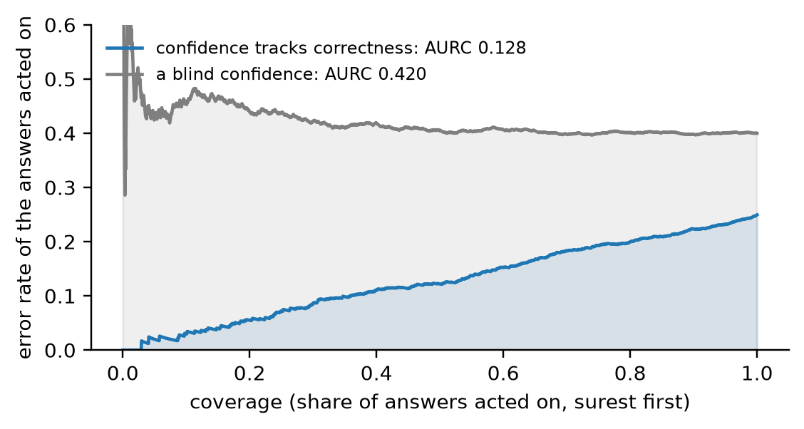

from sysone.losses import decision_metrics, answer_metrics, macro_f1metrics
Metrics in fastai’s style for typed decisions: a split’s predictions in one
Preds, a function per metric, Metric to bind a metric’s arguments, keep it to one kind of question and name it, and a table of metrics by question kind or id. The learner reports them every epoch, and evaluate computes them from any backend’s answers.
In fastai, a metric is a function of what the model predicted and what the targets were. A learner takes a list of them, Learner(dls, model, metrics=[accuracy, F1Score()]), and reports each one after every epoch. Typed decisions need the same thing, with three twists:
- Rows have different numbers of options. A batch pads every row to its widest, so a row’s prediction is its first
klogits, not the whole vector. - Three kinds of questions share a batch, and they answer differently. A choice answers with its likeliest option, a score with its expected level, and a noul with whether p(true) reaches a half. Some metrics only mean something for one kind, like the error of a level for a score, or an AUROC for a noul.
- The gold can be a distribution, or say that no option is right. A soft gold rewards spreading probability the way the annotators did, and an unanswerable row has no option to be right about.
[decision_metrics](https://sgaseretto.github.io/sysonelib/losses.html#decision_metrics) handles all three, and returns the fixed set of Laya’s notebook. This notebook opens the set up. Everything a metric reads about a split sits in one object, Preds, and a metric is any function of a Preds that returns a number. Metric binds a metric’s arguments, keeps it to one kind of question if asked, and names the column it fills:
flowchart LR
G["learn.get_preds(split)<br/>logits, gold, masks, kinds"] --> P[Preds]
A["answers in the Jev schema,<br/>from any backend"] -->|Preds.from_answers| P
P --> F["accuracy(p), f1_score(p), ece(p), …"]
P --> M["Metric(f1_score, average='weighted')<br/>Metric(accuracy, qtype='noul')"]
F & M --> L["Learner(metrics=[...]):<br/>a column per metric, every epoch"]
F & M --> T["metrics_table(p, by='qtype')"]
Preds
A Preds is a dict of arrays with one row per decision: the logits padded with \(-10^4\), the gold distributions padded with zeros, the option masks, the question types and the gold labels. When they are known, it also holds whether each row is answerable, the act head’s p(act), each row’s question id and case index, and its options’ keys. Being a dict, it still works for code that reads learn.get_preds() by key. Its properties derive what metrics need. probs are the softmax over each row’s own options, divided by the temperature of the row’s bucket when the Preds carries temperatures. pred is the option each row answers, and correct, conf and ok say whether that answer is right, how sure it is, and whether the row has an answer among its options at all.
Preds
def Preds(
logits, targets, masks, qtypes, labels, answerable:NoneType=None, act:NoneType=None, qids:NoneType=None,
case_idx:NoneType=None, temperatures:dict | None=None, option_keys:list | None=None
):Every row’s option logits beside its gold, option mask, question type and gold label (and, when known, answerability, p(act), question id, case index and option keys): what metrics and interpretations read
Preds.select
def select(
rows
)->__main__.Preds:The rows a boolean mask or a list of indices picks, with the same temperatures
Preds.right
def right()->numpy.ndarray:Whether acting on each row’s answer would be right: an answerable row answered correctly
Preds.pred
def pred()->numpy.ndarray:Each row’s answer, as an option index: the likeliest option, and for a noul true when p(true) ≥ 0.5
Preds.ok
def ok()->numpy.ndarray:Rows whose gold puts its mass on some option: an answer among the options
Preds.probs
def probs()->numpy.ndarray:Each row’s option probabilities, softmax(z / T) over its own options, zero on padding
Preds.temps
def temps()->numpy.ndarray:Each row’s temperature: its bucket’s, else its type’s, else 1
A toy split of four rows: a four-option choice whose gold is its first option, a noul whose gold is true, a four-level score whose gold is spread over levels 1 and 2, and a three-option choice whose record says none of its options is right. The noul has two options and the last choice three, so their other slots are padding:
logits = np.array([[2.0, 0.5, -1.0, 0.0], [0.3, -0.3, -1e4, -1e4], [0.1, 1.2, 0.4, -0.5], [1.0, 0.0, 0.5, -1e4]])
targets = np.array([[1, 0, 0, 0], [0, 1, 0, 0], [0, 0.5, 0.5, 0], [0, 0, 0, 0]], dtype=float)
masks = np.array([[1, 1, 1, 1], [1, 1, 0, 0], [1, 1, 1, 1], [1, 1, 1, 0]], dtype=bool)
p = Preds(logits, targets, masks, qtypes=[0, 2, 1, 0], labels=[0, 1, 1, -1])
test_eq(p.k.tolist(), [4, 2, 4, 3])
test_eq(p.ok.tolist(), [True, True, True, False])
test_eq(p.pred.tolist(), [0, 0, 1, 0]) # the noul's p(true) is 0.35: it answers false
test_eq(p.correct.tolist(), [True, False, True, False])
test_close(p.probs.sum(1), np.ones(4))
p, p.probs.round(3)(Preds(4 rows: 2 choice, 1 score, 1 noul · 1 unanswerable · T = 1),
array([[0.71 , 0.158, 0.035, 0.096],
[0.646, 0.354, 0. , 0. ],
[0.169, 0.509, 0.229, 0.093],
[0.506, 0.186, 0.307, 0. ]]))Metrics of the answers
The simplest metrics read only each row’s answer. accuracy is the share of answerable rows answered right, and error_rate is its complement, as in fastai. top_k_accuracy asks whether the gold is among the k likeliest options, which separates a model that is nearly right from one that is lost. It counts choice and score rows only, since a noul’s two options are always its top two.
top_k_accuracy
def top_k_accuracy(
p:__main__.Preds, k:int=2
)->float:Share of choice and score rows whose gold label is among the k likeliest options
accuracy
def accuracy(
p:__main__.Preds
)->float:Share of answerable rows answered right: the likeliest option against the gold label (for a noul, p(true) ≥ 0.5 against its truth)
test_close(accuracy(p), 2 / 3)
test_close(error_rate(p), 1 / 3)
test_eq(top_k_accuracy(p, k=1), 1.0) # the two choice and score rows: both answered right
test_eq(top_k_accuracy(p.select([0, 1, 2]), k=4), 1.0)Precision, recall and F1 need classes, and in a typed decision the classes are a question’s options. They are computed per question, and then averaged over questions, which is how [answer_metrics](https://sgaseretto.github.io/sysonelib/losses.html#answer_metrics) computes its macro-F1. A Preds that knows each row’s question id groups its rows by it. One that also knows the option keys counts classes by key, since in typed-decisions the same question id can offer different options in different cases; without keys, an option’s position is its class. Within a question:
average="macro"takes each gold label’s value and averages them, so that a rare label weighs as much as a frequent one, and a model that answers only the frequent labels can’t hide behind its accuracy;average="weighted"weights each label by its support;average="micro"pools every decision, which for single-label answers is the accuracy.
balanced_accuracy is the macro recall. matthews_corrcoef correlates answers with gold labels over the whole confusion matrix (Gorodkin’s multiclass form), and it is 0 for a model that always answers the same. cohen_kappa measures agreement beyond chance. With weights="linear" or "quadratic" a near miss counts as partly right, which suits a score’s ordered levels. Weighted kappa needs the levels in their order, so it always reads options by position.
cohen_kappa
def cohen_kappa(
p:__main__.Preds, weights:str | None=None
)->float:Cohen’s kappa between answers and gold labels per question, averaged; weights ‘linear’ or ‘quadratic’ count near misses between ordered levels as partly right
matthews_corrcoef
def matthews_corrcoef(
p:__main__.Preds
)->float:Matthews correlation between answers and gold labels per question (Gorodkin’s multiclass form), averaged over questions
balanced_accuracy
def balanced_accuracy(
p:__main__.Preds
)->float:The mean recall over each question’s gold labels, then over questions: accuracy with every label weighing the same
f1_score
def f1_score(
p:__main__.Preds, average:str='macro'
)->float:F1 per gold label, averaged as precision is: with ‘macro’, answer_metrics’ macro-F1
fbeta
def fbeta(
p:__main__.Preds, beta:float=1.0, average:str='macro'
)->float:F-beta per gold label (recall weighing beta times as much as precision), averaged as precision is
recall
def recall(
p:__main__.Preds, average:str='macro'
)->float:Recall per gold label, averaged as precision is
precision
def precision(
p:__main__.Preds, average:str='macro'
)->float:Precision per gold label, averaged (‘macro’, support-‘weighted’ or ‘micro’) within each question, then over questions
On a question with three labels where the model always answers the commonest one, accuracy is 0.6 while macro-F1, balanced accuracy and both correlations show that it has learned nothing. A score whose answers are always one level off gets no credit from plain kappa, and most of it from quadratic kappa:
def toy(gold, pred, k=3, qtype=0):
"A Preds whose rows answer `pred` (one-hot logits) to questions with gold labels `gold`"
n = len(gold); z = np.full((n, k), -5.0); z[np.arange(n), pred] = 5.0
return Preds(z, np.eye(k)[gold], np.ones((n, k), bool), [qtype] * n, gold, qids=["q"] * n)
lazy = toy([0, 0, 0, 1, 2], [0, 0, 0, 0, 0])
test_close(accuracy(lazy), 0.6)
test_close(f1_score(lazy), macro_f1([0, 0, 0, 1, 2], [0, 0, 0, 0, 0])) # (0.75 + 0 + 0) / 3
test_close(balanced_accuracy(lazy), 1 / 3)
test_eq((matthews_corrcoef(lazy), cohen_kappa(lazy)), (0.0, 0.0))
perfect = toy([0, 1, 2, 1], [0, 1, 2, 1])
test_eq((f1_score(perfect), matthews_corrcoef(perfect), cohen_kappa(perfect)), (1.0, 1.0, 1.0))
near = toy([0, 1, 2, 3, 1, 2], [1, 2, 3, 2, 0, 1], k=4, qtype=1) # every answer one level off
assert cohen_kappa(near) < 0 < cohen_kappa(near, "quadratic")
{"lazy": {f.__name__: round(f(lazy), 3) for f in (accuracy, f1_score, balanced_accuracy, matthews_corrcoef, cohen_kappa)},
"one level off": {"cohen_kappa": round(cohen_kappa(near), 3), "quadratic": round(cohen_kappa(near, "quadratic"), 3)}}{'lazy': {'accuracy': 0.6,
'f1_score': 0.25,
'balanced_accuracy': 0.333,
'matthews_corrcoef': 0.0,
'cohen_kappa': 0.0},
'one level off': {'cohen_kappa': -0.385, 'quadratic': 0.455}}Metrics of the probabilities
A decision model reports probabilities, and a run judged only on its answers can’t tell an honest 55% from a reckless 99%. These metrics read the probabilities themselves, and they are the definitions of Laya’s evaluation cell, so decision_metrics and answer_metrics give the same numbers:
log_lossis the cross-entropy of each row’s probabilities against its gold distribution, the evaluation loss after calibration.brier_score,soft_accuracy(the probability given to the gold, \(\sum_i p_i g_i\)),kl_divandtv_distancecover choice and noul rows. Laya’s notebook scores a score question by its level instead (next section).ecebins the answers by their probability and averages, weighted by the bins’ sizes, the gap between how sure the answers were and how often they were right;mceis the largest gap in any bin. A model whose 80% answers are right 80% of the time scores 0.
mce
def mce(
p:__main__.Preds, bins:int=15
)->float:Maximum calibration error: the largest gap between confidence and accuracy in any bin
ece
def ece(
p:__main__.Preds, bins:int=15
)->float:Expected calibration error: over equal-width bins of the answers’ probability, the size-weighted gap between confidence and accuracy
tv_distance
def tv_distance(
p:__main__.Preds
)->float:Mean total variation ½Σ|p − g| over choice and noul rows
soft_accuracy
def soft_accuracy(
p:__main__.Preds
)->float:Mean Σ p·g, the probability given to the gold, over choice and noul rows
brier_score
def brier_score(
p:__main__.Preds
)->float:Mean Σ(p − g)² over choice and noul rows
log_loss
def log_loss(
p:__main__.Preds
)->float:Mean cross-entropy of each answerable row’s probabilities against its gold distribution
Metrics of the levels and of the nouls
A score question answers with its expected level, so its error is a distance, not a hit or a miss. score_mae is the mean absolute error of the expected level, and within_one the share within one level of the gold, both from Laya’s notebook. rps, the ranked probability score, compares the two cumulative distributions over the levels, and grows with how much probability sits how many levels away. noul_auroc asks whether p(true) ranks the true statements above the false ones, whatever threshold an answer then uses.
noul_auroc
def noul_auroc(
p:__main__.Preds
)->float:AUROC of p(true) against the gold truth over noul rows: how well the probability ranks true statements above false ones
rps
def rps(
p:__main__.Preds
)->float:Ranked probability score over score rows: the squared distance between the cumulative distributions, per level gap (0 is perfect)
within_one
def within_one(
p:__main__.Preds
)->float:Share of score rows whose expected level is within one level of the gold’s
score_mae
def score_mae(
p:__main__.Preds
)->float:Mean absolute error between the expected level and the gold’s, over score rows
Every metric so far agrees with decision_metrics on random rows of all three kinds, with soft gold on some rows, unanswerable rows, and temperatures per type and bucket:
rng = np.random.default_rng(0)
n, K = 400, 6
qt = rng.choice([0, 1, 2], n)
kk = np.where(qt == 2, 2, rng.integers(3, K + 1, n))
mk = np.arange(K)[None] < kk[:, None]
lab = np.array([rng.integers(0, k) for k in kk])
tg = np.eye(K)[lab]
for i in np.flatnonzero(rng.random(n) < 0.3): # soft gold on a third of the rows
t = rng.dirichlet(np.ones(kk[i])); tg[i] = 0; tg[i, :kk[i]] = t; lab[i] = t.argmax()
un = rng.random(n) < 0.05; tg[un], lab[un] = 0, -1 # a few unanswerable rows
temps = {"choice": 1.3, "noul": 0.8, "score:3-5": 2.0}
zz = rng.normal(0, 2, (n, K))
rp = Preds(zz, tg, mk, qt, lab, qids=[f"q{x}" for x in rng.integers(0, 5, n)], act=rng.random(n), temperatures=temps)
dm = decision_metrics(np.where(mk, zz, -1e4), tg, mk, qt, lab, temps)
mine = {"accuracy": accuracy, "soft_accuracy": soft_accuracy, "brier": brier_score, "kl": kl_div, "tv": tv_distance,
"ece": ece, "score_mae": score_mae, "within_one": within_one}
for k, f in mine.items(): test_close(f(rp), dm[k], eps=1e-9)
rpPreds(400 rows: 121 choice, 128 score, 151 noul · 26 unanswerable · calibrated)Metrics of acting on the answers
A decision model can hand a case to a person instead of acting on its answer (the act head, in losses). Acting on the surest answers first, the risk–coverage curve traces the error rate of the answers acted on against the share acted on. A model whose confidence tracks its correctness keeps the error low until it runs out of sure answers.
aurcis the area under that curve. Lower is better, and a confidence that is unrelated to correctness gives the plain error rate.accuracy_at_coverageis the accuracy on the surestcoverageshare.coverage_at_accuracyis the largest share that keepsaccuracyon the answers acted on.act_aurocmeasures how well the act head’s p(act) separates the answers to act on from the rest.
Each reads either each answer’s probability (score="confidence") or p(act) (score="act"). An unanswerable row counts as an error wherever it is acted on, since none of its options is right. coverage_at_accuracy picks its threshold on the same rows it scores, so it flatters the model; a threshold for use is fitted on held-out rows ([fit_thresholds](https://sgaseretto.github.io/sysonelib/losses.html#fit_thresholds)).
act_auroc
def act_auroc(
p:__main__.Preds
)->float:How well p(act) separates the rows to act on (answered right) from the rest
coverage_at_accuracy
def coverage_at_accuracy(
p:__main__.Preds, accuracy:float=0.9, score:str='confidence'
)->float:The largest share of rows the model can act on, surest first, keeping accuracy on them (fitted on these rows, so optimistic)
accuracy_at_coverage
def accuracy_at_coverage(
p:__main__.Preds, coverage:float=0.8, score:str='confidence'
)->float:Accuracy on the coverage share of rows the model is surest of
aurc
def aurc(
p:__main__.Preds, score:str='confidence'
)->float:Area under the risk–coverage curve: the error rate of the answers acted on, averaged over every coverage from the surest answer to all (lower is better)
selection_scores
def selection_scores(
p:__main__.Preds, score:str='confidence'
)->numpy.ndarray:The score a rule for acting thresholds, per row: each answer’s probability (‘confidence’) or the act head’s p(act) (‘act’)
n = 2000
conf_ = rng.uniform(0.5, 1.0, n); right_ = rng.uniform(size=n) < conf_ # confidence tracks correctness
blind = rng.uniform(size=n) < 0.6 # correct 60% of the time, whatever the confidence
mk_ = np.ones((n, 2), bool)
as_preds = lambda c, r: Preds(np.log(np.stack([1 - c, c], 1).clip(1e-6)), np.eye(2)[np.where(r, 1, 0)], mk_, [0] * n, np.where(r, 1, 0))
sure, unsure = as_preds(conf_, right_), as_preds(np.full(n, 0.6), blind)
test_close(aurc(unsure), 0.4, eps=0.03) # a blind confidence: the error rate
assert aurc(sure) < error_rate(sure) - 0.05
test_close(accuracy_at_coverage(sure, 1.0), accuracy(sure))
assert 0 < coverage_at_accuracy(sure, 0.9) < 0.6
{"aurc": round(aurc(sure), 3), "error rate": round(error_rate(sure), 3), "accuracy on the surest 20%": round(accuracy_at_coverage(sure, 0.2), 3)}{'aurc': 0.128, 'error rate': 0.25, 'accuracy on the surest 20%': 0.945}figure code
fig, ax = plt.subplots(figsize=(5.2, 2.8))
for q, name, color in ((sure, "confidence tracks correctness", "C0"), (unsure, "a blind confidence", "C7")):
cv = coverage_curve(selection_scores(q), q.right)
ax.plot(cv["coverage"], 1 - cv["accuracy"], color=color, lw=1.5, label=f"{name}: AURC {aurc(q):.3f}")
ax.fill_between(cv["coverage"], 0, 1 - cv["accuracy"], color=color, alpha=0.12)
ax.set(xlabel="coverage (share of answers acted on, surest first)", ylabel="error rate of the answers acted on", ylim=(0, 0.6))
ax.legend(loc="upper left"); plt.tight_layout(); plt.show()
Metric
Any function of a Preds is a metric, and its name names the column it fills. Metric wraps one when it needs more than that:
- It binds arguments, like
Metric(f1_score, average="weighted"). - It keeps the metric to one kind of question, like
Metric(accuracy, qtype="noul"), which isdecision_metrics’accuracy_noul. - It composes a name from the function and any argument that differs from its default, so two variants of a metric get two columns.
The CamelCase constructors are fastai’s names for the metrics that take arguments: F1Score, FBeta, Precision, Recall, BalancedAccuracy, MatthewsCorrCoef, CohenKappa. skm_to_sysone is fastai’s skm_to_fastai. It turns a scikit-learn metric, func(y_true, y_pred), or with proba=True func(y_true, probabilities), into a sysone one, computed per question and averaged.
skm_to_sysone
def skm_to_sysone(
func, proba:bool=False, name:str | None=None, qtype:str | None=None, **kwargs
)->__main__.Metric:A scikit-learn style metric func(y_true, y_pred, **kwargs) as a Metric, computed per question and averaged; with proba it gets each row’s option probabilities instead of its answer
CohenKappa
def CohenKappa(
weights:str | None=None
)->__main__.Metric:fastai’s name: cohen_kappa
as_metric
def as_metric(
m
)->__main__.Metric:Metric
def Metric(
func, name:str | None=None, qtype:str | None=None, **kwargs
):A metric of a Preds: func with its arguments bound, over the rows of one question type when qtype is given, reported as name
test_eq([as_metric(m).name for m in (accuracy, Metric(top_k_accuracy, k=3), F1Score(), F1Score("weighted"), FBeta(2), CohenKappa("quadratic"),
Metric(accuracy, qtype="noul"), Metric(ece, "ece_10_bins", bins=10))],
["accuracy", "top_k_accuracy_3", "f1_score", "f1_score_weighted", "fbeta_2", "cohen_kappa_quadratic", "accuracy_noul", "ece_10_bins"])
test_close(Metric(accuracy, qtype="noul")(rp), dm["accuracy_noul"])
test_eq(Metric(CohenKappa("quadratic"), qtype="score").name, "cohen_kappa_quadratic_score")
test_fail(lambda: Metric(accuracy, qtype="yes-no"), contains="qtype must be")
def hits(y_true, y_pred): return float((y_true == y_pred).mean()) # a scikit-learn style function
test_close(skm_to_sysone(hits)(perfect), 1.0)
test_eq(skm_to_sysone(hits, name="hit_rate").name, "hit_rate")metrics_table reports metrics as a table, over every row and, with by, per question type, per question id, or per any label of the rows. With no metrics named, it reports accuracy, macro-F1, log loss, Brier and ECE:
metrics_table
def metrics_table(
p:__main__.Preds, metrics:NoneType=None, by:NoneType=None
):A DataFrame of metrics: a row over all rows, and with by (‘qtype’, ‘qid’ or one label per row) a row per group
metrics_table(rp, [accuracy, F1Score(), BalancedAccuracy(), log_loss, ece, score_mae, noul_auroc, aurc], by="qtype").round(3)| accuracy | f1_score | balanced_accuracy | log_loss | ece | score_mae | noul_auroc | aurc | rows | |
|---|---|---|---|---|---|---|---|---|---|
| all | 0.334 | 0.271 | 0.282 | 1.932 | 0.344 | 1.024 | 0.469 | 0.655 | 374 |
| choice | 0.200 | 0.168 | 0.199 | 2.371 | 0.414 | NaN | NaN | 0.814 | 115 |
| noul | 0.496 | 0.506 | 0.524 | 1.520 | 0.355 | NaN | 0.469 | 0.613 | 139 |
| score | 0.275 | 0.252 | 0.275 | 1.990 | 0.281 | 1.024 | NaN | 0.744 | 120 |
From any backend’s answers
Preds.from_answers builds a Preds from records with gold and the answers a backend gave them in the Jev schema: a sysone Decider, a zero-shot decider, a GLiNER2 decider or Laya’s runtime. It reads each answer back with answer_probs, the core’s generic function on the question’s kind. Every metric above then applies to any backend, and on the answers of the fixture’s model the shared ones agree with answer_metrics:
Preds.from_answers
def from_answers(
records, answers
)->__main__.Preds:The Preds of answers in the Jev schema to records with gold: any backend’s answers, ready for the metrics
from sysone.data import TypedDecisions
from sysone.learner import decision_learnerrecs = [json.loads(l) for l in Path("fixtures/typed_decisions_tiny.jsonl").read_text().splitlines()]
data = TypedDecisions.from_records(recs, calib=0)
torch.manual_seed(0)
learn = decision_learner(data, "fixtures/tiny-modernbert", train="head", preset="cpu", loss="soft_ce", calibrate_after_fit=False)
learn.fit(2, lr=3e-3)
answers = [learn.predict(r["state"], r["questions"]) for r in recs]
pa = Preds.from_answers(recs, answers)
am = answer_metrics([(r["questions"], a, r["gold"]) for r, a in zip(recs, answers)])
for k, f in {"accuracy": accuracy, "soft_accuracy": soft_accuracy, "brier": brier_score, "kl": kl_div, "tv": tv_distance, "ece": ece,
"score_mae": score_mae, "within_one": within_one, "macro_f1": f1_score}.items(): test_close(f(pa), am[k], eps=1e-6)
pa, pa.option_keys[0]{'loss': '1.184', 'grad_norm': '0.3163', 'learning_rate': '0.003', 'epoch': '0.7692'}
{'loss': '1.28', 'grad_norm': '0.2842', 'learning_rate': '0.003', 'epoch': '1.538'}
{'train_runtime': '0.7053', 'train_samples_per_second': '283.6', 'train_steps_per_second': '36.87', 'train_loss': '1.22', 'epoch': '2'}
0%| | 0/26 [00:00<?, ?it/s]
15%|#5 | 4/26 [00:00<00:00, 30.52it/s]
31%|### | 8/26 [00:00<00:00, 34.39it/s]
38%|###8 | 10/26 [00:00<00:00, 34.39it/s]
50%|##### | 13/26 [00:00<00:00, 38.11it/s]
65%|######5 | 17/26 [00:00<00:00, 35.42it/s]
77%|#######6 | 20/26 [00:00<00:00, 35.42it/s]
81%|######## | 21/26 [00:00<00:00, 36.31it/s]
96%|#########6| 25/26 [00:00<00:00, 37.35it/s]
100%|##########| 26/26 [00:00<00:00, 37.35it/s]
100%|##########| 26/26 [00:00<00:00, 36.86it/s](Preds(100 rows: 30 choice, 40 score, 30 noul · 0 unanswerable · T = 1),
['continue', 'human_review', 'observe', 'stop'])Which metric for what
| metric | reads | rows it counts |
|---|---|---|
accuracy, error_rate |
each row’s answer | every answerable row |
top_k_accuracy |
the options’ ranking | choice and score rows |
precision, recall, f1_score, fbeta, balanced_accuracy, matthews_corrcoef, cohen_kappa |
answers, by class | per question, then averaged |
log_loss |
the probabilities against the gold distribution | every answerable row |
brier_score, soft_accuracy, kl_div, tv_distance |
the probabilities against the gold distribution | choice and noul rows |
ece, mce |
the answer’s probability against being right | every answerable row |
score_mae, within_one, rps, cohen_kappa(weights="quadratic") |
the levels | score rows |
noul_auroc |
p(true) | noul rows |
aurc, accuracy_at_coverage, coverage_at_accuracy, act_auroc |
a score to act on: confidence or p(act) | every row; acting on an unanswerable one is an error |
The learner takes them as metrics=[...], [evaluate](https://sgaseretto.github.io/sysonelib/evaluate.html#evaluate) takes them for any backend, and interpret puts them beside the confusions and the worst cases.